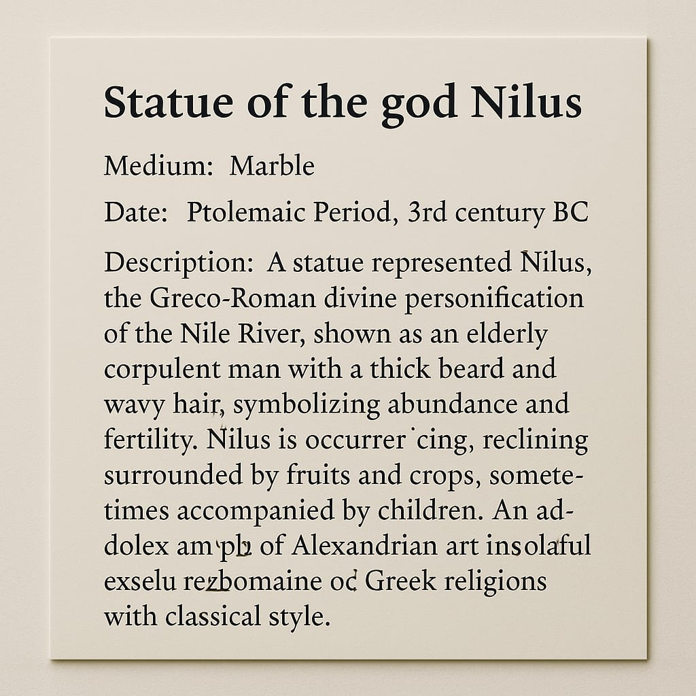

الرؤية
أن نكون وجهة عالمية فريدة تجمع بين الثقافة، الفن، والطبيعة تحت سطح البحر، لتقديم تجربة تعليمية وإبداعية تدعو إلى حماية الحياة البحرية.
الرسالة
تقديم تجربة استثنائية تحت الماء تتيح للزوار التعرف على التراث الثقافي والتنوع البيئي، مع تعزيز الوعي بأهمية حماية المحيطات والحياة البحرية للأجيال القادمة.
الأهداف
- توعية الأجيال القادمة بأهمية تاريخ مصر البطلمية تحت الماء.
معوقات إنشاء المتحف
- صيانة دورية
- التكلفة العالية
- استخدام مواد مستدامة
- تصميم هندسي دقيق
- موافقات من الهيئات الحكومية
العائد المتوقع
|
البند
|
المتحف المادي
|
المتحف الافتراضي
|
|
عدد الزوار
|
100-500الف زائر سنويا
|
50-100 زائر سنويا
|
الأسعار والتكاليف
| البند |
القيمة |
| تكلفة التذكرة |
139 دولار |
| التكلفة التقديرية |
58 دولار |
| نسبة التوفير |
40% |
استطلاع رأي
| السؤال |
الإجابة |
| هل ستتبرع للمتحف؟ |
نعم / لا |
| ما المبلغ الذي ستدفعه؟ |
___ دولار |
| هل ستحضر حفل الافتتاح؟ |
نعم / لا |
لماذا متحف افتراضي؟
توفير ما لا يقل عن 40% من تكلفة انشاء المتحف
شكل لتصور عرض البطاقات

الخطوات التنفيذية
- أعمال التصوير
- برمجة موقع المتحف
- عمل نموذج ثلاثي الأبعاد
- إعداد خطة تسويقية
الخطة التسويقية
- تحديد الجمهور المستهدف
- أهداف الخطة التسويقية
- تحديد الميزانية والجهات المنافسة
- إنشاء مدونة إلكترونية ومحتوى عبر السوشيال ميديا
- الترويج من خلال إعلانات ممولة
- تحليل النتائج